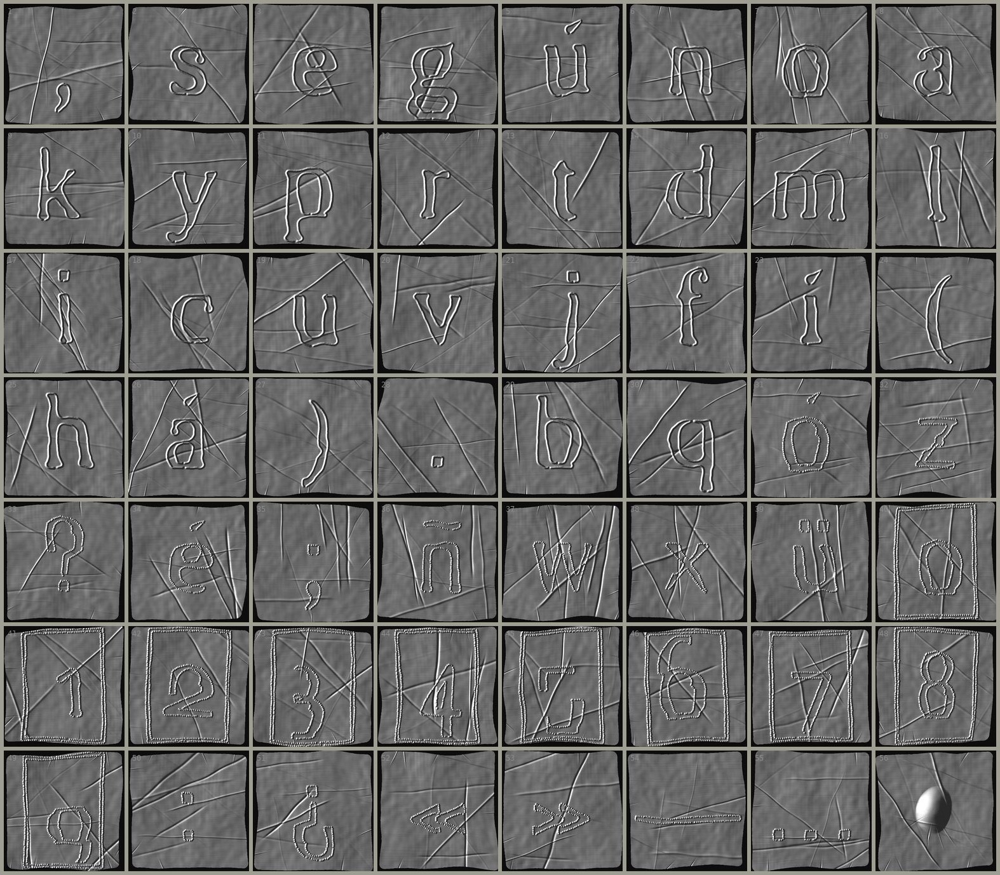
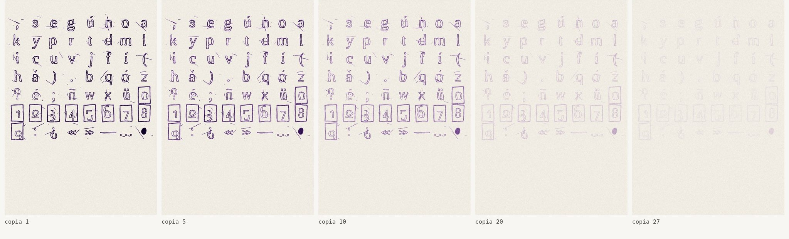

La placa se lleva puesta el tiempo de un bucle. Después se copia hasta que la tinta se acaba.
Cada placa se viste cinco minutos, lo que se supone que dura el bucle, y después se aplana con la palma. Los pliegues no se corrigen: son lo que el cuerpo le escribió encima.
Las placas vestidas se entintan y pasan a la gelatina de un hectógrafo. Cada hoja que se apoya se lleva un poco de tinta. La primera copia sale casi negra; las siguientes, violeta; al final, nada.
La gelatina bebe la tinta que le queda. A las 48 horas está limpia y se puede volver a empezar.
La tierra se dio de beber a sí misma
y ningún contenedor aguanta lo que contiene.del poema

